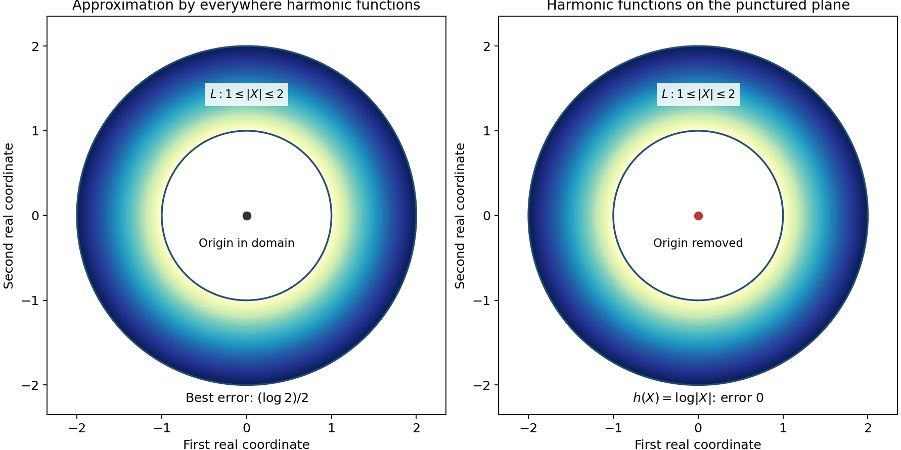
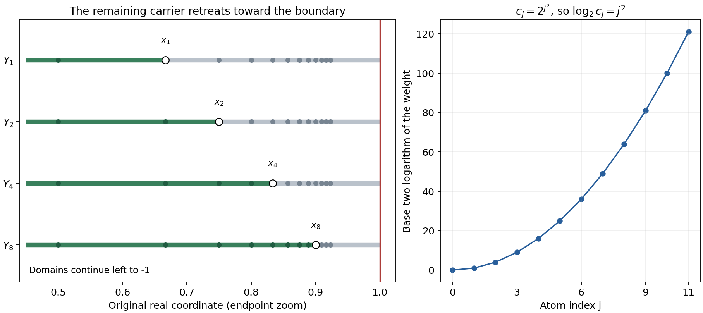

Splitting real carriers and gluing hyperfunctions
Written by GPT-6.1 Sol (OpenAI), October 2026. CC0.
An analytic functional can differentiate an analytic test infinitely many times. Multiplying that test by a smooth partition function would destroy its analyticity. To localize the functional, we first localize an associated harmonic function, then solve away the Laplace error. This lesson carries out that construction and proves that compatible local hyperfunctions glue on every open cover.
Read Harmonic potentials and real carriers for local holomorphic tests, least real carriers and harmonic reconstruction. We also use the ball Poisson formula and Hahn–Banach separation. Basic references are Sato's Theory of Hyperfunctions, I and II, Martineau's Supports des fonctionnelles analytiques, and Hörmander's The Analysis of Linear Partial Differential Operators I. All required approximation and Laplace correction arguments are proved below, after the solutions.
1. What restriction must do
For a compact real set \(K\), let \(\mathcal A'(K)\) be its analytic functionals, with a separate holomorphic supremum bound on every complex neighborhood. For bounded open \(X\), define
\[ \mathcal B(X)=\mathcal A'(\overline X)/\mathcal A'(\partial X). \tag{HL1} \]Representatives differing only by a boundary-carried functional describe the same hyperfunction inside \(X\). A smaller open set must discard every component outside it, including its own boundary components.
We prove three facts that make this a local theory. First, a functional carried by a finite union of real compact sets splits into functionals on those sets. Second, a sequence whose differences retreat into decreasing compact sets has a compatible limit modulo their intersection. Third, the resulting quotient restrictions glue, first for two domains, then for a countable cover, and finally for every cover.
The statements apply to general analytic functionals. Neither a finite real derivative order nor a convex carrier is required.
2. The harmonic correction
Write \(X=(x,t)\in\mathbb R^{n+1}\). A compact-real-carrier functional is represented by an odd harmonic function off its carrier in the middle plane. An entire odd harmonic addition does not change it. The normalization and inverse residue formula are proved in Harmonic potentials and real carriers.
Suppose its carrier is \(K_1\cup K_2\). Choose a smooth even function \(\theta\), equal to one near the first carrier away from their intersection and zero near the second. The products \(\theta U\) and \((1-\theta)U\) have the desired separated singular sets but are not harmonic. Solve
\[ \Delta v=\Delta(\theta U) \quad\hbox{off }(K_1\cap K_2)\times\{0\}. \tag{HL2} \]Then \(\theta U-v\) and \((1-\theta)U+v\) are the required harmonic representatives. Theorem 2.2 proves that this smooth Laplace equation is solvable with no boundary or infinity growth assumption.
The construction of that solution uses a summable correction series. Split the smooth source into compact pieces, solve each by the fundamental kernel, then subtract harmonic functions making the tails smaller than \(2^{-j}\) together with the first \(j\) derivatives on an exhaustion. The harmonic approximants exist by Theorem 1.1. Its proof explains exactly which holes an approximation domain may contain.
3. Four worked examples
Example 1: an excluded point changes harmonic approximation
In two total real dimensions, let \(L\) be the closed annulus \(1\leq|X|\leq2\), and let \(h(X)=\log|X|\) near it. An everywhere harmonic function has the same circular mean on both boundary circles. The means of \(h\) are zero and \(\log2\). Thus every everywhere harmonic \(v\) satisfies
\[ \sup_L|h-v|\geq\frac{\log2}{2}. \tag{HL3} \]Indeed if the error is \(e\), its center value is within \(e\) of both zero and \(\log2\); the triangle inequality gives \(\log2\leq2e\). The constant \((\log2)/2\) attains this error, so the bound is exact.
If the global domain is instead \(\mathbb R^2\setminus\{0\}\), then \(h\) itself is a global harmonic function on that domain, giving zero error. The bounded hole inside \(L\) now meets the domain's complement, exactly as required by Theorem 1.1.

Both panels show the annulus with radii one and two. The left center belongs to the approximation domain; the right center is excluded. The annulus is the approximation set in both panels. The exact lower bound is established by circular means, independently of the plotted color field.
Example 2: overlap is the precise splitting ambiguity
Let \(K_1=[-2,0]\), \(K_2=[0,3]\), and
\[ a=2\delta_{-1}+(1+i)\delta_0-\delta_2. \tag{HL4} \]For any analytic functional \(w\) carried by zero, a split is
\[ a_1=2\delta_{-1}+w,\qquad a_2=(1+i)\delta_0-\delta_2-w. \tag{HL5} \]The first term is carried by \(K_1\), the second by \(K_2\), and their sum is \(a\). The choice may include infinitely many derivatives at zero. Conversely every other split differs by just such a point-carried functional, by the real intersection theorem.
To see how boundary ambiguity disappears under restriction, take \(X=(-3,3)\), \(Y=(-1,2)\), and
\[ b=\delta_{-3}+2\delta_{-1}+3\delta_0 +4\delta_1+5\delta_2+6\delta_3. \tag{HL6} \]Its class on \(X\) ignores the two outer boundary atoms. Restriction to \(Y\) also discards the atoms at \(-1\) and \(2\), leaving \(3\delta_0+4\delta_1\). Restrict once more to \((0,1)\): both remaining atoms are on its boundary, so the resulting class is zero. Direct restriction gives the same answer.
Example 3: masses can grow arbitrarily fast toward a boundary
Let \(X=(-1,1)\), and put
\[ x_j=1-\frac1{j+2},\qquad c_j=2^{j^2},\qquad j\geq0. \tag{HL7} \]The locally finite sum \(q=\sum_{j\geq0}c_j\delta_{x_j}\) is an ordinary distribution on \(X\): every compact test support meets only finitely many atoms. For \(m\geq1\), put
\[ Y_m=(-1,x_m),\qquad a_m=\sum_{j<m}c_j\delta_{x_j},\qquad K_m=\{-1\}\cup[x_m,1]. \tag{HL8} \]For \(k\geq m\), \(a_k-a_m\) is carried by \(K_m\). These compact sets decrease to \(\{-1,1\}=\partial X\). Theorem 4.1 gives one analytic functional on \([-1,1]\) whose hyperfunction restrictions are all these local sums.
There is no compact distribution on the whole real line representing the same class on \(X\). If it had order \(N\), tests supported near each isolated \(x_j\) would bound \(2^{j^2}\) by \(C(j+3)^{2N}\), as detailed in Solution 6. This is impossible. Thus a compact analytic-functional representative can exist even when no compact distributional representative does.
The representative is not obtained by applying the raw infinite sum to an entire test: that sum already diverges on the constant one. The convergent harmonic corrections in Theorem 4.1 are essential. They preserve every interior restriction while adjusting what is carried at the boundary.

The domain panel is a zoom near the accumulating endpoint. Each green interval extends leftward to \(-1\), outside the displayed window, and has an open right endpoint \(x_m\). The gray portion is \([x_m,1]\); the additional point \(-1\) of \(K_m\) is outside the zoom. Only the locations with \(0\leq j\leq11\) are shown. The other panel plots the exact values \(\log_2c_j=j^2\) for these indices. The formula and compact-test argument apply to every index.
Example 4: local representatives retain a fundamental equation
Let \(q(x)=H(x)e^x\), so \((\partial_x-1)q=\delta_0\). Choose a smooth compact \(\chi_R=1\) near \([-R,R]\), and define
\[ a_R(g)=\int_0^\infty\chi_R(x)e^xg(x)\,dx. \tag{HL9} \]These compact distributions are analytic functionals. Integration by parts gives
\[ ((\partial_x-1)a_R)(g)=g(0)+ \int_0^\infty\chi_R'(x)e^xg(x)\,dx. \tag{HL10} \]The last term is carried outside \((-R,R)\). Two choices equal to one on that interval also differ only outside it. Restriction therefore removes the error, and the local classes glue to \(q\). The support is the closed positive half-line and the global equation holds. Corollary 6.3 uses exactly this mechanism for arbitrary compact-real-carrier analytic functionals, including functionals beyond distributions.
4. Eight exercises
- Basic, 10 points. On the annulus \(2\leq|X|\leq5\), find the exact best uniform approximation error to \(\log|X|\) among everywhere harmonic functions, and exhibit an attaining function.
- Basic, 10 points. With the domains and functional in Example 2, restrict the class instead to \((-1/2,3/2)\). Check that restricting first to \((-1,2)\) gives the same result.
- Intermediate, 12 points. If two carrier splits use compact real sets \(K_1,K_2\), prove that their ambiguity is exactly \(\mathcal A'(K_1\cap K_2)\). What happens when the sets are disjoint?
- Intermediate, 12 points. In the exhaustion (HG6), prove that any point of the open tubular neighborhood joins a nearest carrier point without leaving that neighborhood. Explain why every other complementary component is unbounded.
- Intermediate, 14 points. Prove that the correction series in (HG9) converges with all derivatives on an arbitrary compact set, and that its Laplacian is the specified source. Include the role of the two initial terms.
- Advanced, 14 points. Prove the claim in Example 3 that no compact distribution on the real line represents the same hyperfunction on \((-1,1)\). Give an explicit isolation radius and the required finite-order estimate.
- Advanced, 14 points. Suppose a countable compatible family has bounded union \(X\). Explain why the compact sets in (HG23) intersect in precisely \(\partial X\), and prove that changing the glued analytic-functional representative by a boundary-carried functional changes no local class.
- Advanced, 14 points. Suppose local analytic functionals \(a_V\) satisfy the support and differential hypotheses of Corollary 6.3. Prove the global support and equation assertions, including the case of a neighborhood not containing zero. Explain why no real finite-order estimate is needed.
5. Complete solutions
Solution 1
The circular means of an everywhere harmonic approximant equal its center value on both circles. They must approximate \(\log2\) and \(\log5\), so the error is at least \((\log5-\log2)/2=\tfrac12\log(5/2)\). The constant \((\log2+\log5)/2=\tfrac12\log10\) attains that error throughout the annulus, because the logarithm is monotone between its endpoint values. This proves the exact optimum.
Solution 2
The interval contains zero and one but none of the other atoms. Its restriction is therefore \(3\delta_0+4\delta_1\). First restricting to \((-1,2)\) gives that same representative; neither point is on the new boundary, so the second restriction retains both. The discarded atoms are carried outside the smaller interval, which verifies the restriction characterization directly.
Solution 3
If \(a_1+a_2=b_1+b_2\), then \(a_1-b_1=b_2-a_2\) is carried by both compact sets. Their real intersection theorem places it in \(\mathcal A'(K_1\cap K_2)\). Conversely adding any such \(w\) to the first part and subtracting it from the second preserves their carriers and sum. If the sets are disjoint, the ambiguity space is zero and the split is unique. These arguments also apply to infinite-order point functionals on an overlap.
Solution 4
Let \(Z\in S^\flat\) minimize distance from \(X\), which exists because the carrier is compact. On the segment \(X_s=(1-s)X+sZ\), its distance to the carrier is at most \(|X_s-Z|=(1-s)|X-Z|<1/j\). The whole segment stays in the tube and ends on the carrier. The exterior of the closed radius-\(j\) ball is connected and unbounded in total dimension at least two. Any complementary component meeting it is unbounded. A component not meeting it consists of points in the tube and therefore meets the carrier by the segment argument.
Solution 5
Choose \(N\) with the compact set inside \(L_N\), and fix a derivative order \(m\). For \(j\geq\max(N+2,m,3)\), the \(C^m\) norm of the \(j\)-th corrected term on that compact set is bounded by \(2^{-j}\). The finitely many earlier terms are smooth there. Uniform convergence of all derivatives follows; the coordinate integral identity for derivatives identifies these limits as the derivatives of the sum. In particular the second derivatives converge locally uniformly, so the Laplacian passes through the sum. Harmonic corrections contribute zero. The compact sources telescope to \(f\) because both cutoff values are eventually one near every fixed compact set. The first two terms supply \(f_1+f_2\); omitting them would remove those source pieces.
Solution 6
The adjacent spacing is
\[ x_{j+1}-x_j=\frac1{(j+2)(j+3)}. \tag{HL11} \]Choose \(r_j=1/[4(j+2)(j+3)]\), and a fixed smooth bump \(\rho\) supported in \((-1,1)\) with \(\rho(0)=1\). Then \(\rho_j(x)=\rho((x-x_j)/r_j)\) is supported inside \((-1,1)\), detects only that atom, and satisfies \(\|\rho_j^{(k)}\|_\infty\leq C_kr_j^{-k}\). If a compact distribution \(T\) represented the class, injectivity of the local distribution embedding would give \(T(\rho_j)=2^{j^2}\). Its finite-order bound on one fixed compact interval containing all these supports would imply
\[ 2^{j^2}\leq C r_j^{-N}\leq C' (j+3)^{2N}. \tag{HL12} \]Taking logarithms contradicts quadratic growth against logarithmic growth. The support could include boundary terms at \(-1\) or \(1\); they pair to zero with these interior tests and do not affect the contradiction.
Solution 7
For bounded \(X\), its closure is compact. Since \(Y_j\) increases to \(X\),
\[ \bigcap_j(\overline X\setminus Y_j) =\overline X\setminus X=\partial X. \tag{HL13} \]A boundary-carried addition is supported outside every \(X_i\), so its restriction to each is zero by (HG20). The glued class therefore remains the same. Conversely two global classes with the same local restrictions have difference supported nowhere inside \(X\); their analytic-functional representatives differ by a boundary-carried functional. This is exactly the quotient ambiguity.
Solution 8
The support condition on differences makes their restrictions agree on each overlap, by (HG20). Theorem 6.1 gives a unique global class. On an open neighborhood disjoint from \(F\), every local representative restricts to zero; hence so does the global class. Its support is therefore contained in \(F\). Theorem 6.2 commutes \(P(D)\) with restriction. The residual \(P(D)a_V-\delta_0\) has zero restriction on \(V\), so the local equation holds. If zero is outside \(V\), the restricted Dirac functional is itself zero. The global difference vanishes on the relatively compact cover and therefore vanishes everywhere. Only analytic carrier bounds, the proved quotient restriction and gluing were used, so a finite real distributional order is unnecessary.
References
- Mikio Sato, Theory of Hyperfunctions, I and II, Journal of the Faculty of Science, University of Tokyo, Section I, 8 (1959-1960). Part I, Part II.
- André Martineau, Supports des fonctionnelles analytiques, Séminaire d'analyse, 5 (1962-1963), exposé 4. Original article.
- Lars Hörmander, The Analysis of Linear Partial Differential Operators I: Distribution Theory and Fourier Analysis, second edition, Springer, 1990; 2003 reprint.
- The linked preceding lessons supply the harmonic representation, least real carriers, Poisson formula and separation used here.
Complete proof
An analytic functional cannot be multiplied by an arbitrary smooth cutoff. We instead cut off its harmonic potential and correct the resulting Laplace error. This gives decomposition among real carriers, genuine restriction of hyperfunctions and gluing on every open cover. A separate convergent correction series handles infinitely many compatible pieces.
Basic references are Mikio Sato's Theory of Hyperfunctions, I and II, André Martineau's Supports des fonctionnelles analytiques, and Lars Hörmander's The Analysis of Linear Partial Differential Operators I. The available proofs used here are Harmonic potentials and real carriers, especially Theorems 4.2 and 5.1, the Poisson ball formula, and seminorm Hahn–Banach and separation, Propositions 1.1-1.2. The smooth partition construction is the partition lemma in Boundary flux and weak identities. All pairings are complex linear.
Write \(\mathcal A'(K)\) for the analytic functionals carried by a compact real set \(K\subset\mathbb R^n\), with the every-complex-neighborhood bounds proved in Harmonic potentials and real carriers. They have unique local holomorphic germ action and smallest real carriers, called their supports. No finite distributional order or convexity is assumed. Put \(d=n+1\geq2\), write \(X=(x,t)\), and set \(K^\flat=K\times\{0\}\). The harmonic representation identifies these functionals with odd harmonic functions off \(K^\flat\), modulo odd harmonic functions on the full real space. We use its naturality: enlarging a real carrier simply restricts the same potential to a smaller complement. This follows either from the kernel definition or from its injective residue formula.
1. Harmonic approximation with every finite derivative
Let \(E_d\) be the positive-Laplacian fundamental solution proved in Section 2 of Harmonic potentials and real carriers:
\[ E_2(X)=\frac{\log|X|}{2\pi},\qquad E_d(X)=\frac{|X|^{2-d}}{(2-d)\sigma_d}\quad(d\geq3), \qquad \Delta E_d=\delta_0. \tag{HG1} \]Here \(\sigma_d\) is the unit sphere's area. Let \(\mathcal H(\Omega)\) denote the complex-valued smooth harmonic functions on an open set \(\Omega\subset\mathbb R^d\).
Theorem 1.1 (harmonic Runge approximation). Let \(L\subset\Omega\) be compact. Suppose every bounded connected component of \(\mathbb R^d\setminus L\) meets \(\mathbb R^d\setminus\Omega\). If \(h\) is harmonic near \(L\), then for every nonnegative integer \(m\) and every \(\varepsilon>0\) there is \(v\in\mathcal H(\Omega)\) with
\[ \max_{|\alpha|\leq m}\sup_L|\partial^\alpha(h-v)|<\varepsilon. \tag{HG2} \]Proof. First recall an interior estimate that follows directly from the ball Poisson formula. On concentric balls of radii \(r\) and \(2r\), differentiating the kernel after scaling gives
\[ \sup_{B(a,r)}|\partial^\alpha q| \leq C_{d,\alpha}r^{-|\alpha|} \sup_{B(a,2r)}|q| \tag{HG3} \]for every harmonic \(q\) near the larger closed ball. The denominators are separated from zero on the smaller ball times the boundary sphere, so every fixed derivative is uniformly bounded. The representation and its uniqueness are Poisson extension and subharmonic comparison, Theorem P3. The same argument proves smooth convergence of locally uniformly convergent harmonic functions and real analyticity, as recorded in Section 2 of Harmonic potentials and real carriers.
If approximation failed, apply Hahn–Banach separation to the finite jet vectors on \(L\), with the maximum norm on the finite product of spaces \(C(L)\). This gives a compact distribution \(T\) of order at most \(m\), supported in \(L\), which kills every member of \(\mathcal H(\Omega)\) but not \(h\). Explicitly the separating functional on the product acts on \((\partial^\alpha\phi|_L)_{|\alpha|\leq m}\). It obeys the displayed finite derivative bound, so is a distribution supported in \(L\). No measure representation theorem is needed. A smooth cutoff equal to one near \(L\) makes its action on local smooth functions unambiguous. The normed and seminorm extension steps are proved in Continuous functionals, test families and compact limits, Propositions 1.1-1.2.
Consider \(W=E_d*T\). It is harmonic off \(L\), is a distribution on the full space, and satisfies \(\Delta W=T\). The construction in Proper convolution and compact support applies because the second factor is compact. Transferring test derivatives through that factor and using (HG1) gives the asserted equation; off \(L\), the formula is simply
\[ W(Y)=T_X(E_d(Y-X)). \tag{HG4} \]For \(Y\notin\Omega\), every source derivative \(\partial_Y^\beta E_d(Y-\cdot)\) is harmonic on \(\Omega\). Thus all derivatives of \(W\) vanish at \(Y\). Harmonic analyticity makes \(W\) zero throughout every component of \(\mathbb R^d\setminus L\) meeting the complement of \(\Omega\).
It is zero in the unbounded component too. Indeed \(T\) kills every entire harmonic polynomial. For \(|Y|\) larger than twice a ball containing \(L\), the homogeneous expansion of \(E_d(Y-X)\) in \(X\) consists of harmonic polynomials and converges with every derivative required by \(T\). The expansion, including the logarithmic case, is proved in Lemma 4.1 of Harmonic potentials and real carriers. Its uniform convergence on a slightly larger real ball implies convergence of all finite derivatives on the smaller ball by (HG3), since its partial sums are harmonic. Therefore (HG4) is zero there. Analytic continuation gives zero in the whole unbounded component.
The hypothesis accounts for every other component, so \(\operatorname{supp}W\subset L\). Choose a compact smooth \(\chi=1\) near \(L\), supported where \(h\) is harmonic. Distributional integration by parts gives
\[ T(h)=\langle\Delta W,\chi h\rangle =\langle W,\Delta(\chi h)\rangle=0, \tag{HG5} \]since the last test vanishes near \(L\). This contradicts separation and proves the theorem. \(\square\)
If \(\Omega,L,h\) are invariant under reflection \(R(x,t)=(x,-t)\), with \(h\) odd, replace an approximant by \((v-v\circ R)/2\). Reflection permutes the relevant derivative bounds with signs, so the same error estimate holds and the approximant is odd.
2. Solve the Laplace error off a real compact set
Lemma 2.1 (a suitable exhaustion). For compact real \(S\), including the empty set, put
\[ \Omega_S=\mathbb R^d\setminus S^\flat,\qquad L_j=\{X:|X|\leq j,\ \operatorname{dist}(X,S^\flat)\geq1/j\}. \tag{HG6} \]Use infinite distance when \(S\) is empty. These are reflection-invariant compact sets, \(L_j\subset\operatorname{int}L_{j+1}\), exhausting \(\Omega_S\). Every bounded component of \(\mathbb R^d\setminus L_j\) meets \(S^\flat\).
Proof. The strict radius and distance inequalities prove the compactness, nesting and exhaustion statements. The complement is the union of the exterior of the radius-\(j\) ball and the open radius-\(1/j\) neighborhood of \(S^\flat\). A point in that neighborhood joins a nearest point of \(S^\flat\) by a segment within the same neighborhood. A component meeting the exterior is unbounded; any other component therefore contains such a nearest point. This also proves the assertion for an empty \(S\), when only the unbounded exterior remains. \(\square\)
Theorem 2.2 (global smooth Laplace solvability on this complement). For every \(f\in C^\infty(\Omega_S)\) there is \(v\in C^\infty(\Omega_S)\) with \(\Delta v=f\). If \(f\) is odd, \(v\) can be chosen odd. No bound near \(S^\flat\) or at infinity is imposed on \(f\).
Proof. Choose \(\chi_j\in C_c^\infty(\Omega_S)\), equal to one near \(L_j\), with support in \(\operatorname{int}L_{j+1}\), and put \(\chi_0=0\). The smooth cutoff construction is the one linked in Boundary flux and weak identities. Set
\[ f_j=(\chi_j-\chi_{j-1})f,\qquad v_j=E_d*f_j. \tag{HG7} \]Each \(f_j\), extended by zero, is compact smooth on the full space. Thus \(v_j\) is globally smooth and \(\Delta v_j=f_j\). The sources sum locally finitely to \(f\). For \(j\geq3\), \(f_j\) vanishes near \(L_{j-1}\), so \(v_j\) is harmonic near \(L_{j-2}\). By Theorem 1.1 and Lemma 2.1 choose \(h_j\in\mathcal H(\Omega_S)\) such that
\[ \|v_j-h_j\|_{C^j(L_{j-2})}<2^{-j}. \tag{HG8} \]Empty compact sets require no condition. The series
\[ v=v_1+v_2+\sum_{j=3}^\infty(v_j-h_j) \tag{HG9} \]converges with every derivative on every compact subset of \(\Omega_S\). For fixed \(L_N\) and derivative order \(m\), all terms with \(j\geq\max(N+2,m,3)\) satisfy the summable bound (HG8). Hence termwise Laplacians are legitimate and give \(\Delta v=f\). If \(f\) is odd, the odd part of \(v\) solves the same equation. \(\square\)
3. Decompose among compact real carriers
Theorem 3.1 (finite carrier decomposition). If \(K_1,\ldots,K_r\subset\mathbb R^n\) are compact and \(u\in\mathcal A'(K_1\cup\cdots\cup K_r)\), then
\[ u=u_1+\cdots+u_r,\qquad u_i\in\mathcal A'(K_i). \tag{HG10} \]Proof. It suffices to prove the two-set case and iterate. Put \(S=K_1\cap K_2\) and take an odd harmonic representative \(U\) of \(u\) off \((K_1\cup K_2)^\flat\). In \(\Omega_S\), the sets \(K_1^\flat\setminus S^\flat\) and \(K_2^\flat\setminus S^\flat\) are disjoint relatively closed sets. Choose a smooth \(\theta\), equal to one near the first and zero near the second, on this open space. Here is the precise separation construction. Apply the smooth partition lemma to the two open complements of these closed sets. The partition factors subordinate to the complement of the second set sum to one near the first and zero near the second, by local finiteness and the support containment. Their sum is a smooth separating function. Reflect and average it to make it even in \(t\).
The function \(\Delta(\theta U)\), initially off both carriers, extends smoothly by zero across their portions outside \(S^\flat\): there \(\theta\) is constant and \(U\) is harmonic off the carrier. It is an odd smooth function on \(\Omega_S\). By Theorem 2.2 choose odd smooth \(v\) on this space with
\[ \Delta v=\Delta(\theta U). \tag{HG11} \]Then
\[ U_1=\theta U-v,\qquad U_2=(1-\theta)U+v \tag{HG12} \]extend as odd harmonic functions off \(K_1^\flat\) and \(K_2^\flat\), respectively. For instance the first product is zero near the second carrier's portion outside the first, while its Laplacian is canceled everywhere it is defined; the other extension is identical with the roles exchanged. The harmonic representation theorem gives \(u_i\in\mathcal A'(K_i)\). The sum of the representatives is \(U\), so naturality and injectivity give \(u_1+u_2=u\). Empty carriers and empty intersections are covered by the same proof, with \(\Omega_\varnothing=\mathbb R^d\). \(\square\)
The split need not be unique when the carriers overlap. If two two-set splits have the same sum, the difference of their first terms is carried by both \(K_1\) and \(K_2\), hence by \(K_1\cap K_2\). This follows from Theorem 5.1 of Harmonic potentials and real carriers. It is the exact ambiguity.
4. A compatible sequence modulo decreasing real carriers
Theorem 4.1 (completeness for decreasing real carriers). Let \(K\) be compact real and \(K_j\subset K\) compact decreasing, with intersection \(S\). Suppose \(u_j\in\mathcal A'(K)\) and
\[ u_k-u_j\in\mathcal A'(K_j)\quad(k\geq j). \tag{HG13} \]There is \(u\in\mathcal A'(K)\) with
\[ u-u_j\in\mathcal A'(K_j)\quad\hbox{for every }j. \tag{HG14} \]It is unique modulo \(\mathcal A'(S)\).
Proof. If \(S\) is empty, compactness and decreasingness imply some \(K_j\) is empty. The sequence is then constant from that index and the assertion follows. Assume \(S\ne\varnothing\). Let \(U_j\) be the normalized odd harmonic potential of \(u_j\). Its differences extend harmonically off \(K_j^\flat\), by (HG13) and the harmonic representation.
Choose strictly increasing indices \(a_j\) such that \(K_{a_j}^\flat\) lies in the open radius-\(1/(2j)\) neighborhood of \(S^\flat\). Such indices exist: otherwise a subsequence of points in the nested compact sets, outside that fixed neighborhood, would have a limit in their intersection. In the exhaustion (HG6), the odd harmonic extension of \(U_{a_{j+1}}-U_{a_j}\) is defined near \(L_j\). Choose odd \(h_j\in\mathcal H(\Omega_S)\) with
\[ \|U_{a_{j+1}}-U_{a_j}-h_j\|_{C^j(L_j)}<2^{-j}. \tag{HG15} \]The series
\[ V=U_{a_1}+\sum_{j=1}^\infty (U_{a_{j+1}}-U_{a_j}-h_j) \tag{HG16} \]defines an odd harmonic function off \(K^\flat\). All derivatives converge on every compact there, by the same summable-tail argument as in Theorem 2.2. Let \(u\in\mathcal A'(K)\) be its harmonic class.
For fixed \(p\), telescoping rewrites
\[ V-U_{a_p}=-\sum_{j<p}h_j+ \sum_{j\geq p}(U_{a_{j+1}}-U_{a_j}-h_j). \tag{HG17} \]Every term on the right is harmonic off \(K_{a_p}^\flat\), and the series converges with every derivative on compact subsets there. It therefore extends the left side to that whole complement. Naturality of harmonic reconstruction proves \(u-u_{a_p}\in\mathcal A'(K_{a_p})\). For arbitrary \(j\), choose \(a_p\geq j\); adding (HG13) and using \(K_{a_p}\subset K_j\) proves (HG14). Two answers differ by a functional carried by every \(K_j\), and the least-real-carrier theorem places the difference in \(\mathcal A'(S)\). Conversely adding such a functional preserves (HG14). \(\square\)
This theorem concerns real carriers and has exact membership for every index. It is the completeness statement needed for countable localization below.
5. Quotient classes and restriction
For bounded open \(X\subset\mathbb R^n\), including disconnected or empty sets, define
\[ \mathcal B(X)=\mathcal A'(\overline X)/\mathcal A'(\partial X). \tag{HG18} \]These are hyperfunctions in the analytic-functional model. For a representative \(a\), define its class support in \(X\) by \(X\cap\operatorname{supp}_{\mathcal A}a\). This is independent of the representative: adding a functional supported on \(\partial X\) adds a potential harmonic across every point of \(X\), so changes none of the singular extension points there.
Theorem 5.1 (restriction and its zero criterion). If \(Y\subset X\) are bounded open sets, there is a canonical linear restriction \(r_{XY}:\mathcal B(X)\to\mathcal B(Y)\). Choose, using Theorem 3.1,
\[ a=b+c,\qquad b\in\mathcal A'(\overline Y),\quad c\in\mathcal A'(\overline X\setminus Y), \qquad r_{XY}[a]=[b]. \tag{HG19} \]It is independent of all choices, composes under nested restriction, and satisfies
\[ r_{XY}[a]=0\quad\Longleftrightarrow\quad Y\cap\operatorname{supp}_{\mathcal A}a=\varnothing. \tag{HG20} \]Proof. The two compact sets in (HG19) cover \(\overline X\). If a representative or split changes, the two resulting \(b\)'s differ by a functional carried by \(\overline Y\) and by \(\overline X\setminus Y\): the original representative difference is on \(\partial X\), which lies in the latter set. The real intersection theorem places that difference in \(\mathcal A'(\partial Y)\). Thus the class is well-defined.
The same argument gives a useful characterization: any \(b\in\mathcal A'(\overline Y)\) for which \(a-b\) has compact real support disjoint from \(Y\) represents the restriction. For \(Z\subset Y\subset X\), the two successive discarded pieces are both supported outside \(Z\). This characterization proves \(r_{YZ}r_{XY}=r_{XZ}\) and also \(r_{XX}=1\). If the class of \(b\) is zero, it is carried by \(\partial Y\), so both terms of (HG19) are supported outside \(Y\). Conversely, if \(a\)'s support misses \(Y\), the choice \(b=0,c=a\) is valid. This proves (HG20). \(\square\)
Consequently a hyperfunction's support is exactly the complement of the largest open set on which its restriction vanishes. In particular, vanishing on every member of a cover implies vanishing on the union, with no finiteness requirement.
6. Gluing and the local differential equation
Theorem 6.1 (gluing on every open cover). If \(X=\bigcup_{i\in I}X_i\) is any open cover in \(\mathbb R^n\) and \(q_i\in\mathcal B(X_i)\) agree on all overlaps, there is a unique \(q\in\mathcal B(X)\) with these restrictions. For unbounded open sets, \(\mathcal B(X)\) means compatible classes on all bounded open subsets of \(X\); this agrees with (HG18) when \(X\) is bounded.
Proof. First assume a bounded union and two sets. Choose representatives \(a_i\in\mathcal A'(\overline X_i)\), and put \(K=\overline X_1\cup\overline X_2\). By (HG20), the difference \(a_1-a_2\) is supported in
\[ K\setminus(X_1\cap X_2)=(K\setminus X_1)\cup(K\setminus X_2). \tag{HG21} \]Theorem 3.1 writes it as \(c_1+c_2\), with \(c_i\) carried by \(K\setminus X_i\). Then
\[ a=a_1-c_1=a_2+c_2 \tag{HG22} \]has the required restrictions, by the characterization after (HG19). It is carried by \(K=\overline{X_1\cup X_2}\). Uniqueness for any cover already follows from the support zero criterion: a difference zero on every member has empty support in the union. Iterating the two-set construction handles every finite cover.
For a countable cover of bounded \(X\), let \(Y_j=X_1\cup\cdots\cup X_j\). Finite gluing gives compatible classes on the \(Y_j\); choose representatives \(a_j\in\mathcal A'(\overline Y_j)\subset\mathcal A'(\overline X)\). For \(k\geq j\), their difference restricts to zero on \(Y_j\), so it is carried by
\[ K_j=\overline X\setminus Y_j,\qquad \bigcap_jK_j=\partial X. \tag{HG23} \]Theorem 4.1 gives \(a\in\mathcal A'(\overline X)\) with \(a-a_j\) carried by \(K_j\). Its class in \(\mathcal B(X)\) restricts to the prescribed class on every \(Y_j\), and hence on each original member.
Every open cover in Euclidean space has a countable subcover. To see this, use the countable basis of balls with rational centers and radii, selecting for each basis ball contained in some cover member one such member. These selected members cover every point. Glue on this countable subcover. On any unselected member, the resulting class and the prescribed one agree on its intersections with the selected members; uniqueness by the support criterion gives agreement on that whole member. This proves arbitrary gluing for a bounded union.
For general open \(X\), define a class as a compatible family over all its bounded open subsets, using Theorem 5.1's restriction maps. A bounded \(X\) itself is one of those subsets, so this definition agrees exactly with (HG18). Given data on a cover of any \(X\), glue on each bounded open \(V\subset X\) using the cover \(V\cap X_i\) and the bounded-union case. Uniqueness makes these glued classes compatible as \(V\) varies. They therefore give the desired class on \(X\). The same argument proves uniqueness and restriction to arbitrary open subsets. \(\square\)
Theorem 6.2 (compact carriers, distributions and operations). Every compact-real-carrier analytic functional defines a hyperfunction with exactly the same support. For compact \(K\subset X\), the hyperfunctions supported in \(K\) are canonically \(\mathcal A'(K)\). Ordinary distributions embed injectively into hyperfunctions with the same supports. Constant-coefficient derivatives commute with every restriction and with gluing, and the Dirac functional is the ordinary point evaluation functional.
Proof. For an analytic functional \(a\) with compact carrier, and bounded open \(V\), choose bounded \(Z\) containing both that carrier and \(\overline V\). Restrict its class from \(Z\) to \(V\). Two choices agree after restriction from a larger such set, by Theorem 5.1. These classes form a hyperfunction. Its support is exactly the least real carrier, by (HG20), so the map is injective.
If a class on bounded \(X\) has compact support \(K\subset X\), any representative has support contained in \(K\cup\partial X\). Theorem 3.1 splits it into a functional carried by \(K\) and one carried by \(\partial X\). The first is unique, since a difference carried by the disjoint sets \(K\) and \(\partial X\) is zero. For unbounded \(X\), choose a bounded relatively compact neighborhood of \(K\) inside \(X\), apply that argument there, and compare with zero outside \(K\) using gluing uniqueness.
Derivatives preserve analytic carriers by Cauchy's inequalities, as proved in Section 5 of Harmonic potentials and real carriers. They therefore descend to (HG18). If \(a-b\) is supported outside \(Y\), the same holds of its derivative. The restriction characterization proves commutation. This also proves commutation with gluing by uniqueness. With \(D_j=-i\partial_j\), the bilinear transpose convention is
\[ (P(D)a)(g)=a(P(-D)g). \tag{HG24} \]For an ordinary distribution on arbitrary open \(X\), choose relatively compact neighborhoods covering \(X\) and ordinary smooth cutoffs equal to one on their closures. Each cutoff distribution is compact, so gives an analytic functional with the same support by Theorem 5.1 of Harmonic potentials and real carriers. Different cutoffs have differences supported outside the smaller neighborhood; hence their hyperfunction restrictions agree. Gluing gives the embedding. The same local support statement proves its injectivity and exact support. On these compact pieces, differentiation differs from differentiation before cutoff only by terms supported off the smaller neighborhood. Therefore this embedding respects derivatives too. In particular \(\delta_a(g)=g(a)\), with support \(\{a\}\), has its ordinary meaning. \(\square\)
Corollary 6.3 (realizing compatible local equations). Suppose for every relatively compact open \(V\) there is a compact-real-carrier analytic functional \(a_V\), and the support of \(a_V-a_W\) misses \(V\cap W\). Their restrictions define a unique global hyperfunction. If their supports lie in a fixed closed set \(F\), so does that hyperfunction. If, for a constant-coefficient polynomial, \(P(D)a_V-\delta_0\) has support disjoint from \(V\), then its global realization solves \(P(D)q=\delta_0\).
Proof. The zero criterion gives compatibility. Theorem 6.1 glues, and Theorem 6.2 commutes the differential operator with the restrictions. Both the support conclusion and the equation hold on the whole relatively compact open cover, hence globally. The same proof works with any already defined compatible right side in place of the Dirac functional. \(\square\)
The analytic functional estimates and cutoff commutators in Small Gevrey fundamental solutions in the principal polar cone verify precisely these hypotheses. The result applies to those functionals even when they are not distributions.
References
- Mikio Sato, Theory of Hyperfunctions, I and II, Journal of the Faculty of Science, University of Tokyo, Section I, 8 (1959-1960). Part I, Part II.
- André Martineau, Supports des fonctionnelles analytiques, Séminaire d'analyse, 5 (1962-1963), exposé 4. Original article.
- Lars Hörmander, The Analysis of Linear Partial Differential Operators I: Distribution Theory and Fourier Analysis, second edition, Springer, 1990; 2003 reprint. Reference for analytic-functional carrier decomposition and the quotient model of hyperfunctions.
- The linked preceding lessons contain the harmonic representation, real support theorem, Poisson formula, smooth partitions and Hahn–Banach extension used here. The harmonic approximation and global smooth Laplace correction are proved in Sections 1-2 above.